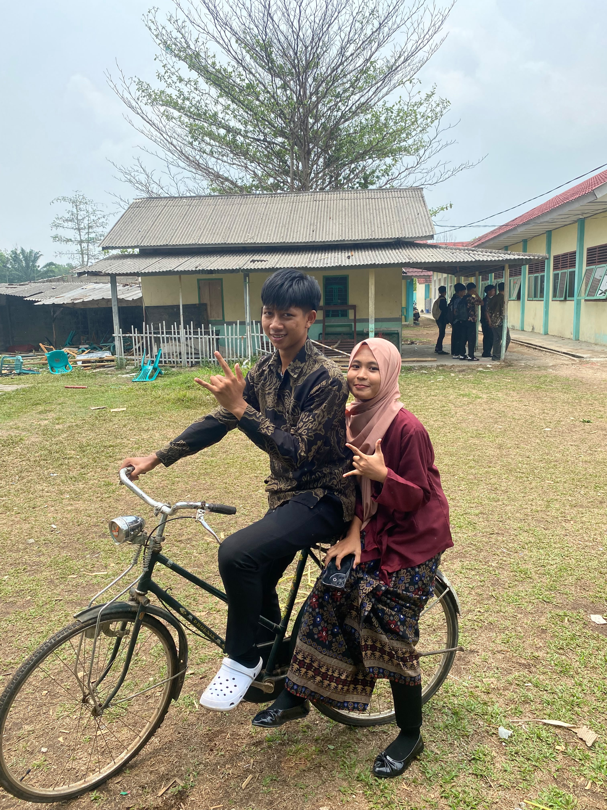
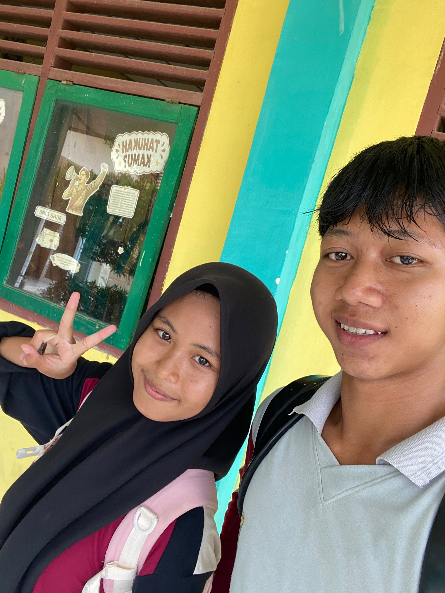

Ada sebuah tempat kecil yang sengaja
dibuat untuk seseorang yang sedang
merayakan hari istimewanya.
Dan hari ini, seluruh cerita di dalamnya
adalah tentang kamu.
Selamat bertambah usia, sayang.
Hari ini, dunia sedang merayakan
salah satu tanggal paling istimewa,
yaitu hari ketika seseorang sepertimu
hadir dan memulai ceritanya.
Semoga usia yang baru membawa
lebih banyak kebahagiaan, ketenangan,
dan hal-hal baik yang selama ini
diam-diam kamu harapkan.
Sayang, mungkin kamu tidak selalu
menyadari betapa berharganya dirimu.
Ada hal-hal sederhana dari dirimu
yang mungkin tidak kamu anggap istimewa,
tetapi justru menjadi bagian kecil
yang membuatmu berbeda.
Kamu tidak harus selalu menjadi hebat.
Tidak harus selalu terlihat kuat.
Tidak harus selalu baik-baik saja.
Cukup terus menjadi dirimu sendiri,
sebab kamu juga pantas dicintai
dalam keadaan apa pun.
Dua gambar, dua kenangan, dan banyak cerita di baliknya.

Salah satu kenangan kesukaanku ♡

First fotbar after asing◍˃ᵕ˂◍
Semoga masih ada banyak cerita indah yang bisa kita abadikan di kemudian hari.
Untukmu, kesayanganku.
Semoga sehat selalu.
Semoga rezekimu dilapangkan.
Semoga segala urusanmu dimudahkan.
Semoga cita-citamu menemukan jalan.
Semoga hatimu selalu dipenuhi ketenangan.
Semoga kamu dikelilingi orang-orang baik.
Semoga tidak ada mimpi yang membuatmu
berhenti percaya pada dirimu sendiri.
Semoga aku selalu ada di setiap ceritamu.
Dan yang paling penting,
semoga kamu selalu punya alasan
untuk mensyukuri hari-harimu.
Sebelum kamu menyelesaikan
perjalanan kecil ini,
ada satu pesan yang belum kamu baca.
Tekan tombol di bawah, ya!
Akhir dari halaman ini,
tetapi bukan akhir dari cerita
yang masih ingin kita tulis.
Terima kasih sudah menjadi
bagian dari dunia kecilku.
Semoga hari ini, esok, dan seterusnya
selalu menyimpan kebahagiaan
untukmu.
Tetaplah menjadi Izal
yang selalu punya cerita
untuk diceritakan.
Dengan penuh cinta, untuk Izal. ♡